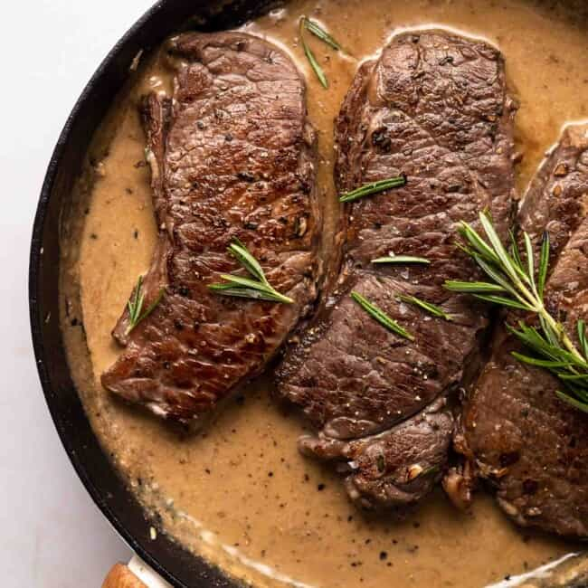

Rosemary Steak

Steak cooked in butter with Rosemary and Garlic
Ingredients
- Steak (NY Strip, Filet Mignon, or Porterhouse)
- Butter
- Garlic (sliced)
- Rosemary
- Black Pepper
Steps
- Add oil to preheated pan, add black pepper to steak
- Sear both sides of steak
- Add gratuitous amount of butter directly onto pan, not onto steak
- Once butter melts, add garlic and rosemary to pan
- Use spoon to scoop melted butter onto top of steak
- Flip steak and continue with topping with melted butter mixure, adding more butter as needed
- Plate steak once desired level of cook is achieved